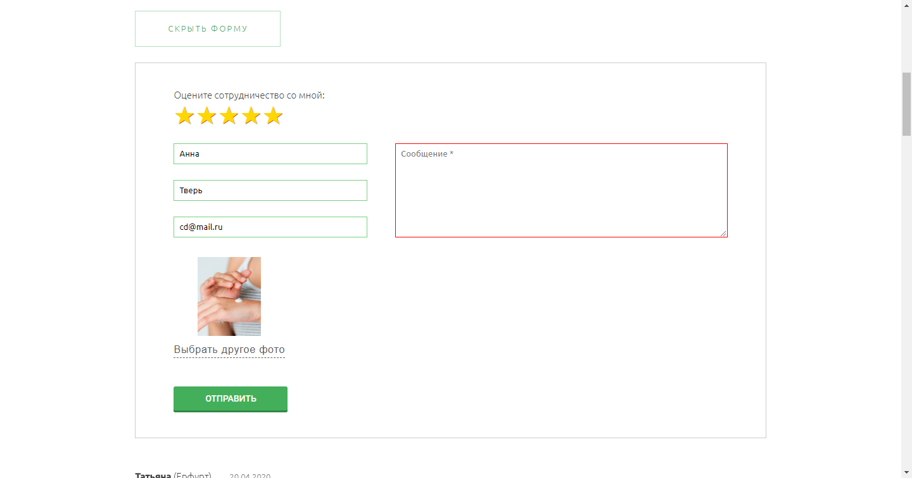
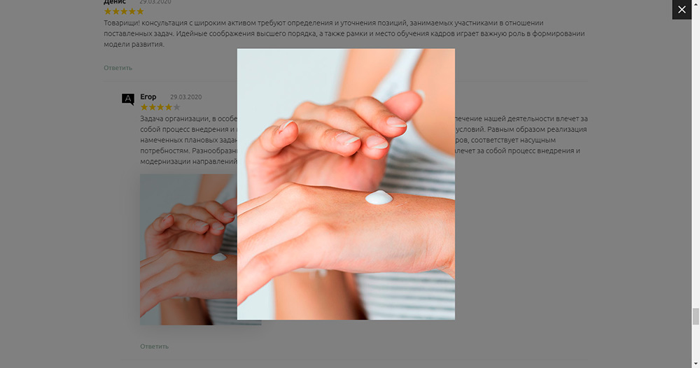

Система комментариев на PHP, MySQL, jQuery и AJAX
Отзывы на персональном сайте врача COSMETOLOG-DRONOV.ru.
В проекте реализовано:
- Вложенность комментариев с возможностью отвечать на отзыв.
- Валидация полей формы и на стороне клиента, и на стороне сервера.
- Проверка текста комментария на наличие ссылок и "http".
- Вставка сообщений в базу данных MySQL.
- Пагинация: ajax подгрузка комментариев.
- Zoom изображения.
- Валидация изображения (<input type="file">) при загрузке и на сервере: размер и формат.
- Показ превью картинки при загрузке (FileReader) в форме добавления комментария.
- Оценка по типу рейтинга со звездами.
- Стилизация записи Администратора.
- Отображение формы сразу под кнопкой Ответить и фиксирование просмотра на этом же уровне после добавления комментария.
- Письмо-уведомление на почту Администратору о новом отзыве.
- Защита от спама при помощи дополнительного поля.
Скриншоты

